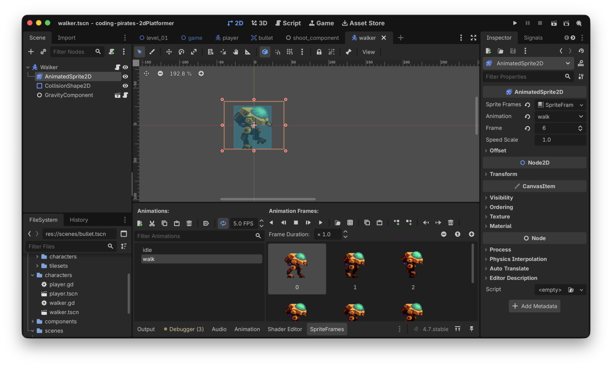
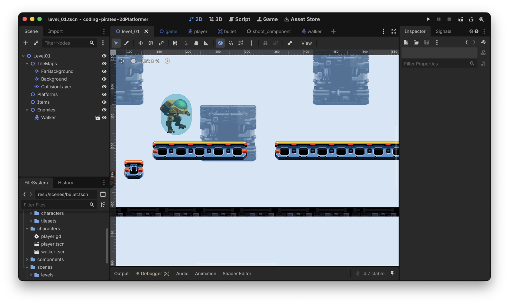
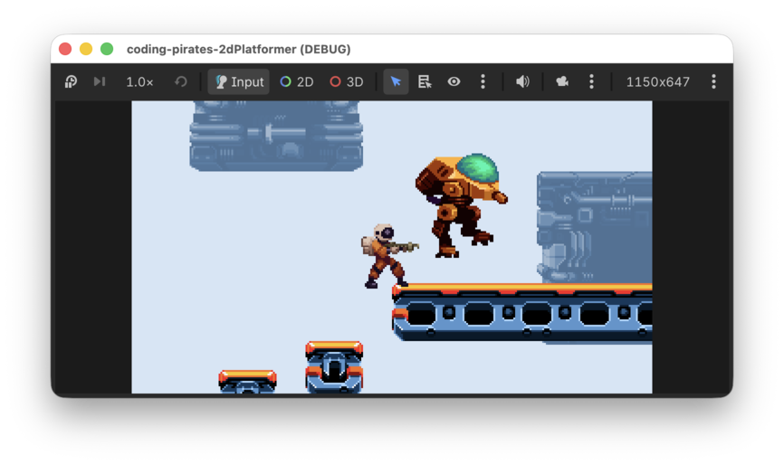
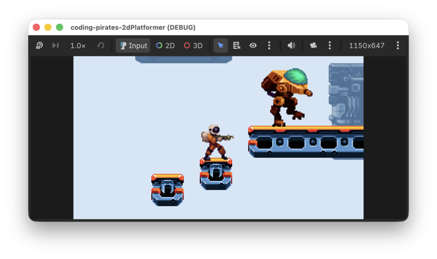

Godot 2D Platformer - level 10 fjender
Efter level 9 kan vi nu skyde, så kunne det jo være sjovt hvis der var noget at skyde på også!
Lad os lave det!
Enemy
Vores fjender er i første omgang nogle store onde 2 benede robotter, tænk ED-209 fra Robocop eller AT-STs fra Star Wars f.eks. (og hvis du ikke ved hvem de er, så har du nogle film du skal have set!)
I første omgang skal vi igennem en masse rutinearbejde som vi har gjort mange gange før, så lad os lave en liste og arbejde os igennem det.
Du kan godt selv nu, så vi ses på den anden side :)
Her er et enkelt screenshot af vores setup, bemærk
at vi har brugt et Rectangle til vores
CollisionShape2D

Og så det bedste, strege ud fra listen
Tilføj vores Walker til Level01
I level 2 var vi super organiserede og
lavede en masse "kasser" vi kunne putte ting i i vores
Level01 scene, tak til os!
Nu kan vi så i Level01
- Klikke på "Enemies" "kassen"
- "Instantiate Child Scene"
- Vælge vores
walker.tscn - Flytte den hen på en platform
Det ser sådan her ud ved os nu:

Prøv at kør dit spil og se om du kan finde vores walker.

Højst undervældende! Den svæver bare frit i luften og gør ingenting.
Nej...for det har vi jo ikke fortalt den, men nu kommer vores komponenter i spil og gør det nemt!
Script og components
Start med at lav et nyt script til vores Walker, gem det sammen med
walker.tscn som walker.gd
GravityComponent
Nu kan vi tilføje vores GravityComponent til
Walkeren præcis på samme måde som vi gjorde til vores
Player.
- Tilføj en
@export var gravity_component: GravityComponenttil voresWalkerscript - "Instantiate Child scene" og tilføje
gravity_component.tscnpå voresWalker - Assigne
GravityComponenttil "Gravity Component" i "Inspectoren" for vores "Walker"
Og så kan vi rette vores walker.gd script til så vi
bruger vores fine GravityComponent i
_physics_process.
Husk at tilføj move_and_slide() sidst i
_physics_process, ellers sker der ikke meget.
Her er hele scriptet:
extends CharacterBody2D
@export_subgroup("Nodes")
@export var gravity_component: GravityComponent
func _physics_process(delta: float) -> void:
gravity_component.handle_gravity(self, delta)
# Husk den her!
move_and_slide()Kør dit spil igen.
Bedre, nu står vores Walker da i det mindste på jorden.

Lad os få den til at gå også.
HorizontalMovementComponent
Tilføj vores HorizontalMovementComponent på samme måde
som du lige har gjort med GravityComponent.
Som default har vi sat speed i vores
HorizontalMovementComponent til 150. Det er måske lidt for
hurtigt til sådan en Walker som vi gerne vi have skal gå mere tungt og
langsomt.
Så vi skruer lige ned for tempoet i
HorizontalMovementComponent bare for vores Walker. Hvordan
kan vi gøre det?
Jo vi har jo den her i HorizontalMovementComponent
@export var speed: float = 150
Den kan vi jo få fat i, i vores
@export var horizontal_movement_component: HorizontalMovementComponent
variabel i walker.gd scriptet.
Hvis vi nu implementerer _ready funktionen som bruges
til netop sådan nogle ting, så kan vi sætte hastigheden der til f.eks.
50:
func _ready() -> void:
horizontal_movement_component.speed = 50Og så skal vi bare kalde funktionen
handle_horizontal_movement som vi lavede på
HorizontalMovementComponent.
Men hov!
Hvad var det nu den funktion tog af parametre?
func handle_horizontal_movement(body: CharacterBody2D, direction: float) -> void
direction?
Det var jo super nemt med vores Player, der fik vi jo at vide om man havde trykket til venstre eller til højre, men det kan vi jo ikke her hvor vores Walker bare skal gå frem og tilbage på en platform.
Hvordan løser vi det?
Det løser vi på en pæn måde i næste level så i første omgang kan vi bare altid gå i en retning, lad os sige højre, altså 1.
Så er vi klar til at kalde `handle_horizontal_movement``
Hvis vi bare altid går mod højre ser det sådan her ud:
extends CharacterBody2D
@export_subgroup("Nodes")
@export var gravity_component: GravityComponent
@export var horizontal_movement_component: HorizontalMovementComponent
func _ready() -> void:
horizontal_movement_component.speed = 50
func _physics_process(delta: float) -> void:
gravity_component.handle_gravity(self, delta)
horizontal_movement_component.handle_horizontal_movement(self, 1)
# Husk den her!
move_and_slide()Kør dit spil igen...jaeh, joeh, vi har en Walker der bevæger sig mod højre, men ingen animationer og når den når kanten af en platform falder den ned og fortsætter mod højre, det vidste vi jo sådan set godt.
- Animationerne kan vi løse her
- Det der med at den falder ned fixer vi elegant i næste level med en
RayCast2Dnode fra Godot...de har tænkt på alt for os :)
AnimationComponent
Vi kan genbruge den samme AnimationComponent så tilføj
den, præcis som du tilføjede GravityComponent og
HorizontalMovementComponent ovenfor.
Husk lige at du skal tilføje "Sprite" til din
AnimationComponent under din Walker præcis som du gjorde da
du tilføjede den til din Player i level 7
Og så kan vi kalde
animation_component.handle_move_animation i
_process præcis som vi gjorde med vores Player
tidligere.
Her er vores bud, bemærk at vi lige har lavet en ny lokal variabel:
var current_movement_direction: float = 1
i vores walker.gd script fordi vi skal bruge den samme
retning til både movement og animations håndtering.
extends CharacterBody2D
@export_subgroup("Nodes")
@export var animation_component: AnimationComponent
@export var gravity_component: GravityComponent
@export var horizontal_movement_component: HorizontalMovementComponent
var current_movement_direction: float = 1
func _ready() -> void:
horizontal_movement_component.speed = 50
func _physics_process(delta: float) -> void:
gravity_component.handle_gravity(self, delta)
horizontal_movement_component.handle_horizontal_movement(self, current_movement_direction)
# Husk den her!
move_and_slide()
func _process(delta: float) -> void:
animation_component.handle_move_animation(current_movement_direction)Kør dit spil igen og se nu...vores Walker overholder tyngeloven, bevæger sig og animerer og det har kostet os meget lidt arbejde her anden gang fordi vi allerede havde komponenter til at håndtere arbejdet for os.
Godt arbejde!
Nu har vi fjender der flytter sig, de falder så ud over kanten men det løser vi elegant i næste level, på gensyn!